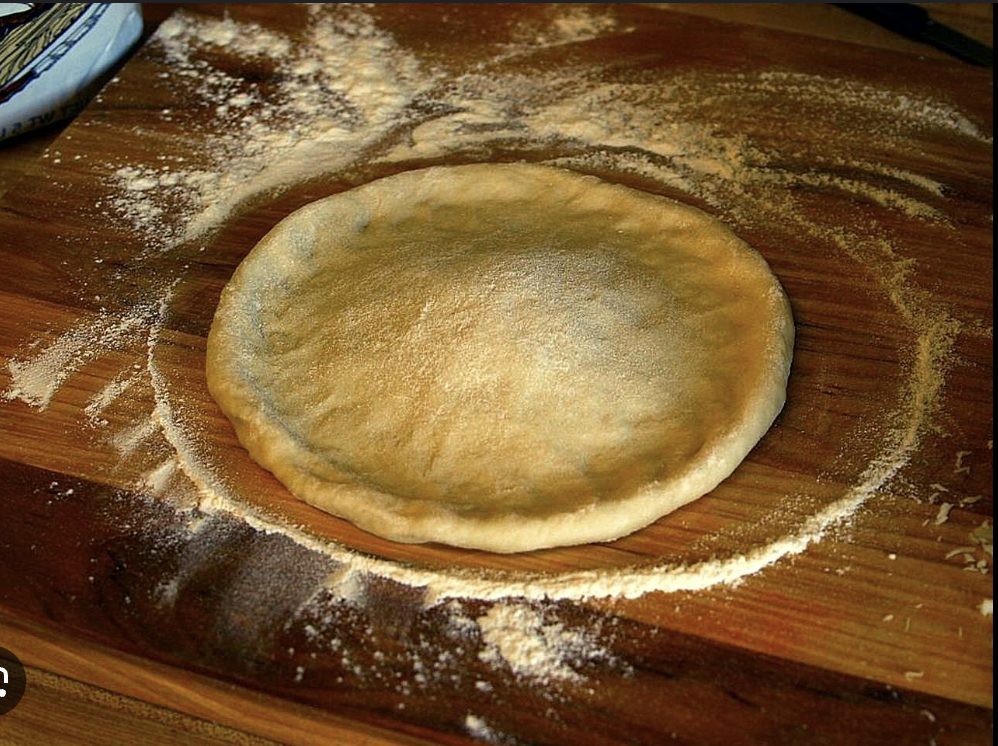

Homemade pizza Dough
This Pizza dough recipe come from my mom's friend. My mom's Friend Showed her this recipe right before Covid started. So after my mom learned this recipe she would make it at least once a week. So now we never order fast food pizza and always make this delicious

| Prep Time: |
Cook Time: |
Additional Time: |
| 10 mins |
15 mins |
20 mins |
| Total Time: |
Serving: |
Yield: |
| 45 mins |
8 |
1 12-inch pizza crust |
Pizza Dough Ingredients
You will just need 5 simple ingredients(also warm water). Here's what you need:
- Yeast:Yeast is a leavening which means it helps the igredients rise up.
- Sugar:Sugar will help activte your yeast which speeds up the rising process
- Bread Flour:You should use bread flour it helps te pizza become more chewy and has more protein
- Olive Oil:Olive oil will add more flavor and color it also help prevent sogginess.
- Salt:Salt will add flavor and strengthens the gluten.
How to shape and prepare the dough
Use a bit of olive oil and maybe a touch of flour on your surface instead of a lot of flour to keep the dough from sticking and to help it turn golden and crispy. When shaping the dough, gently stretch or roll it without overworking it, aiming for a 10–12 inch circle about 1/3 inch thick so it stays soft yet sturdy enough for toppings.
Ingredients
- 1 cup warm water
- One oacket of dry yeast(.25 ounce)
- 1 teaspoon white sugar
- 2 1/2 cups bread flour
- 2 tablespoons olive oil
- 1 teaspoon salt
Directions
- Gather all ingredients. Preheat the oven to 450 degrees F(230 degrees C), and lightly grease a pizza pan.
- Place warm water in a bowl add yeast and sugar. Mix and let stand until creamy, for about 10 minutes.
- Add flour, oil, and salt to the yeast mixture beat untill smooth. you can do this by hand or a mixer to make it easier.
- let dough rest for 5 minutes.
- Turn dough out into a lightly floured surface and pat or roll into a 12-inch circle.
- Transfer the dough into a pizza pan.
- Spread crust with sauce and topping of your choice.
- Bake in the preheated oven util golden brown for about 15-20 minutes. Remove from the oven and let it cool for 5 minutes.
- Take a silce and enjoy
Nutrition Facts
| Nutrition |
| Serving per recipe:8 |
Caloris:170 |
% Daily Value |
| Total Fat: |
4g |
5% |
| Saturated Fat: |
1g |
3% |
| Sodium: |
293mg |
13% |
| Total Carbohydrate: |
28g |
10% |
| Dietary Fiber: |
1g |
4% |
| Total Sugars: |
1g |
N/A |
| Protein: |
5g |
10% |
| Calcium |
7mg |
1% |
| Iron |
2mg |
10% |
| Potassium |
55mg |
1% |